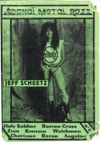

<!DOCTYPE PUBLIC "-//W3C//DTD XHTML 1.0 Transitional//EN" "http://www.w3.org/TR/1/DTD/1-transitional.dtd">
 xmlns="http://www.w3.org/1999/" xml:lang="en" lang="en">

<head>
<meta http-equiv="Content-Type" content="text; charset=utf-8" />
<title>Adonai Metal Roxx, May 1991, #4 :: CMnexus</title><link rel="stylesheet" href="../../../articles.css" type="text/css" title="CMnexus" /><meta name="viewport" content="width=device-width" /><meta name="title" content="Adonai Metal Roxx, May 1991, #4 :: CMnexus" /><meta name="color-scheme" content="light dark" /><meta name="description" content="Index of Adonai Metal Roxx, May 1991, #4, featuring Jeff Scheetz on the cover. The CMnexus is a magazine index covering Christianity and music." /><meta name="theme-color" content="#669966" /><meta name="theme-color" content="#25282a" media="(prefers-color-scheme:dark)" /><meta name="keywords" content="Adonai Metal Rock, Adonai Metal Roxx, Jeff Scheetz, Borderline, Overdrive, Angeline, Eternal Ryte, Chosen Stranger, Seventh Sign, Immortal, Charizma, Zion, Barren Cross, Recon, Ransom, Holy Soldier, Watchmen" /><link rel="canonical" href="page1" /><link rel="image_src" href="../../../images/covers/AMROK1991_5_4_Jeff_pr20.jpg" /><link rel="help" href="../../../about/" /><link rel="home" href="../../../" /><link href="../1989/page2" rel="prev" /><link rel="up index" href="../issues" /> 
<script type="application/ld+json">{"@context":"http:\/\/schema.org","@type":"Periodical","name":"Adonai Metal Roxx","hasPart":[{"@type":"ImageObject","contentUrl":"http:\/\/cmnexus.org\/images\/covers\/AMROK1991_5_4_Jeff_pr20.jpg","caption":"Cover of Adonai Metal Roxx, May 1991 #4, featuring Jeff Scheetz","representativeOfPage":true,"datePublished":"1991-05"}],"isFamilyFriendly":true,"image":[{"@type":"ImageObject","contentUrl":"http:\/\/cmnexus.org\/images\/covers\/AMROK1991_5_4_Jeff_pr20.jpg","caption":"Cover of Adonai Metal Roxx, May 1991 #4, featuring Jeff Scheetz","representativeOfPage":true}]}</script>
<link rel="apple-touch-icon" type="image/png" href="../../../apple-touch-icon.png" />
</head>
<body bgcolor="#000067" text="#000000" link="#000066" vlink="#000066" alink="#660000" itemscope itemtype="http://schema.org/WebPage">
<table bgcolor="#FFFFFF" width="100%" cellspacing="0" cellpadding="8" class="p100pc" id="maintable">
<tr valign="top" class="">
<td bgcolor="#669966" colspan="2" class="navcolor noprint p0tnytny navtop" style="padding-bottom:0px" itemscope itemtype="http://schema.org/SiteNavigationElement">
<div  id="pagehead" class="tnytnytnyonlyin">
<b><a href="../../../"
title="CMnexus" border="0" class="img" align="center">CMnexus</a></b>
<span class="smalltnytny tnytnytnyonlyoff">: <i>Contemporary Christian culture, music, and media.</i></span>
</div>
<ul class="navbar nodisc din" style="padding-top:.5em;">
<li class="pr2em din mainnav" ><a title="Browse magazines" href="../../">Magazines</a></li>
<li class="pr2em din mainnav" ><a title="Browse artists &amp; authors" href="../../../profiles/">Profiles</a></li>
<li class="din mainnav" ><a title="GMA Dove Award nominees and winner listings" href="../../../awards/Dove_Awards">Dove Awards</a></li>

</ul>

</td>
</tr>
<tr valign="top" class="vaT">
<td class="vaT" id="cocol" width="*">
<div class="vaT flL b600" itemprop="breadcrumb"><span class="printonly">cmnexus.org</span><a class="noprint tnytnyonlyoff" href="../../../" title="Front page of the CMnexus" itemprop="url"><span class="tdn">CM</span>nexus</a><span class="tnytnyonlyoff"> &rarr; </span><a href="../../" title="Browse all magazines" rel="up up up" itemprop="url"><span itemprop="name">Magazine list</span></a> &rarr; <a href="../../Adonai_Metal_Rock" class="magazine"title="Information about Adonai Metal Rock" rel="up up" itemprop="url"><span itemprop="name">Adonai Metal Rock</span></a> &rarr; <a href="../issues" class="" title="Issues of Adonai Metal Rock by year" rel="up" itemprop="url"><span itemprop="name">Issues</span></a></div><h1 class="sectiontitle clB mb0"><span class="magazine">Adonai Metal Roxx</span></h1><h2  align="center" class="fsxl allsmcap wsnw mt0 mb0">May 1991, #4</h2><table align="center" class="internalnav noprint clB usn"><tr><td class="b600 flC" align="center">
<a href="../1989/page2" title="Earlier issue of Adonai Metal Roxx" rel="prev">&lt; -- Prev</a>&nbsp;&nbsp;&nbsp;&nbsp;&nbsp;&nbsp;&nbsp;&nbsp;<a href="../issues#y1991" class="" title="Issues of Adonai Metal Rock by year">Issue list</a>&nbsp;&nbsp;&nbsp;&nbsp;&nbsp;&nbsp;&nbsp;&nbsp;<span class="yearunkn">Next -- &gt;</span></td></tr>
</table>
<div class="m600px m0px" itemscope itemtype="http://schema.org/CreativeWork/Periodical"><meta itemprop="name" content="Adonai Metal Rock" /><div itemscope itemtype="http://schema.org/CreativeWork/Periodical/Issue" style="margin-top:-1px;"><table class="flR clB" style="min-width:200px;margin:20px;margin-right:0px;margin-top:5px;display:block;"><tr><th>Cover</th></tr><tr><td></td></tr></table><h2 align="center" class="mb1pr mt25pcempr"><a href="../../../profiles/Jeff_Scheetz" class="profile"  title="Profile of Jeff Scheetz">Jeff Scheetz</a></h2><meta itemprop="datePublished" content="1991-05" /><b>Cover Feature:</b><ul class="lulm">
<li>"Woodpecker Stomp"<div style="margin-left:1.5em"><a href="../../../profiles/Jeff_Scheetz" class="profile"  title="Profile of Jeff Scheetz">Jeff Scheetz</a></div></li>
</ul><b>Article:</b><ul class="lulm">
<li>"Après la première vague du metal chrétien suédois...."<div style="margin-left:1.5em"><a href="../../../profiles/Borderline" class="profile"  title="Profile of Borderline">Borderline</a></div></li>
<li>"Avant de devenir Overdrive, le groupe a porté six noms différents"<div style="margin-left:1.5em"><a href="../../../profiles/Overdrive" class="profile"  title="Profile of Overdrive">Overdrive</a></div></li>
<li><a href="../../../profiles/Angeline" class="profile"  title="Profile of Angeline">Angeline</a></li>
<li><a href="../../../profiles/Eternal_Ryte" class="profile"  title="Profile of Eternal Ryte">Eternal Ryte</a></li>
<li><a href="../../../profiles/Chosen_Stranger" class="profile"  title="Profile of Chosen Stranger">Chosen Stranger</a></li>
<li><a href="../../../profiles/Seventh_Sign" class="profile"  title="Profile of Seventh Sign">Seventh Sign</a></li>
<li><a href="../../../profiles/Immortal" class="profile"  title="Profile of Immortal">Immortal</a></li>
<li>"Join Hands"<div style="margin-left:1.5em"><a href="../../../profiles/Charizma" class="profile"  title="Profile of Charizma">Charizma</a></div></li>
</ul><b>Interview:</b><ul class="lulm">
<li><a href="../../../profiles/Zion" class="profile"  title="Profile of Zion">Zion</a></li>
<li>"L'un des géants du metal chrétien, prend un sacré virage"<div style="margin-left:1.5em"><a href="../../../profiles/Barren_Cross" class="profile"  title="Profile of Barren Cross">Barren Cross</a></div></li>
<li><a href="../../../profiles/Recon" class="profile"  title="Profile of Recon">Recon</a></li>
<li><a href="../../../profiles/Ransom" class="profile"  title="Profile of Ransom">Ransom</a></li>
<li><a href="../../../profiles/Holy_Soldier" class="profile"  title="Profile of Holy Soldier">Holy Soldier</a></li>
<li><a href="../../../profiles/Watchmen" class="profile"  title="Profile of Watchmen">Watchmen</a></li>
</ul><b>White Underground:</b><ul class="lulm">
<li><a href="../../../profiles/Seventh_Sign" class="profile"  title="Profile of Seventh Sign">Seventh Sign</a> - <span class="album" title="The album 'demo' is by Seventh Sign">demo</span></li>
<li><a href="../../../profiles/Angeline" class="profile"  title="Profile of Angeline">Angeline</a> - <span class="album" title="The album 'demo' is by Angeline">demo</span></li>
<li><a href="../../../profiles/Mortification" class="profile"  title="Profile of Mortification">Mortification</a> / <a href="../../../profiles/Lightforce" class="profile"  title="Profile of Lightforce">Lightforce</a> - <span class="album" title="The album 'Break The Curse' is by Mortification / Lightforce">Break The Curse</span></li>
<li><a href="../../../profiles/Overdrive" class="profile"  title="Profile of Overdrive">Overdrive</a> - <span class="album" title="The album 'Overdrive' is by Overdrive">Overdrive</span></li>
<li><a href="../../../profiles/Red_Ink" class="profile"  title="Profile of Red Ink">Red Ink</a> - <span class="album" title="The album 'Raw Meat' is by Red Ink">Raw Meat</span></li>
<li><a href="../../../profiles/Immortal" class="profile"  title="Profile of Immortal">Immortal</a> - <span class="album" title="The album 'Dead & Buried' is by Immortal">Dead & Buried</span></li>
<li><a href="../../../profiles/Trinity" class="profile"  title="Profile of Trinity">Trinity</a> - <span class="album" title="The album 'New Dawn' is by Trinity">New Dawn</span></li>
<li><a href="../../../profiles/Living_Sacrifice" class="profile"  title="Profile of Living Sacrifice">Living Sacrifice</a> - <span class="album" title="The album 'Not Yielding To Ungodly' is by Living Sacrifice">Not Yielding To Ungodly</span></li>
<li><a href="../../../profiles/Bloody_Cross" class="profile"  title="Profile of Bloody Cross">Bloody Cross</a> - <span class="album" title="The album 'Thrashin' for the King' is by Bloody Cross">Thrashin' for the King</span></li>
<li><a href="../../../profiles/Retrace" class="profile"  title="Profile of Retrace">Retrace</a> - <span class="album" title="The album 'Retrace Live!' is by Retrace">Retrace Live!</span></li>
<li><a href="../../../profiles/Holy_Danger" class="profile"  title="Profile of Holy Danger">Holy Danger</a> - <span class="album" title="The album 'One Way' is by Holy Danger">One Way</span></li>
<li><a href="../../../profiles/Heirborne" class="profile"  title="Profile of Heirborne">Heirborne</a> - <span class="album" title="The album 'Morbid Reality' is by Heirborne">Morbid Reality</span></li>
<li><a href="../../../profiles/Charizma" class="profile"  title="Profile of Charizma">Charizma</a> - <span class="album" title="The album 'demo' is by Charizma">demo</span></li>
<li><a href="../../../profiles/Bride" class="profile"  title="Profile of Bride">Bride</a> - <span class="album" title="The album 'demo #3 (4 songs)' is by Bride">demo #3 (4 songs)</span></li>
<li><a href="../../../profiles/Jeshaia" class="profile"  title="Profile of Jeshaia">Jeshaia</a> - <span class="album" title="The album 'demo' is by Jeshaia">demo</span></li>
<li><a href="../../../profiles/Thresher" class="profile"  title="Profile of Thresher">Thresher</a> - <span class="album" title="The album 'Totally Possessed' is by Thresher">Totally Possessed</span></li>
</ul><b>Vinyle-Blanc-Metallizez:</b><ul class="lulm">
<li><a href="../../../profiles/Idle_Cure" class="profile"  title="Profile of Idle Cure">Idle Cure</a> - <span class="album" title="The album '2nd Avenue' is by Idle Cure">2nd Avenue</span></li>
<li>various artists - <span class="album" title="The album 'The Axemen' is by various artists">The Axemen</span></li>
<li><a href="../../../profiles/Bloodgood" class="profile"  title="Profile of Bloodgood">Bloodgood</a> - <span class="album" title="The album 'Out of the Darkness' is by Bloodgood">Out of the Darkness</span></li>
<li><a href="../../../profiles/The_Lead" class="profile"  title="Profile of The Lead">The Lead</a> - <span class="album" title="The album 'The Past Behind' is by The Lead">The Past Behind</span></li>
<li><a href="../../../profiles/Watchmen" class="profile"  title="Profile of Watchmen">Watchmen</a> - <span class="album" title="The album 'Generation' is by Watchmen">Generation</span></li>
<li><a href="../../../profiles/Charizma" class="profile"  title="Profile of Charizma">Charizma</a> - <span class="album" title="The album 'Join Hands' is by Charizma">Join Hands</span></li>
<li><a href="../../../profiles/Holy_Soldier" class="profile"  title="Profile of Holy Soldier">Holy Soldier</a> - <span class="album" title="The album 'Holy Soldier' is by Holy Soldier">Holy Soldier</span></li>
<li><a href="../../../profiles/Tourniquet" class="profile"  title="Profile of Tourniquet">Tourniquet</a> - <span class="album" title="The album 'Stop the Bleeding' is by Tourniquet">Stop the Bleeding</span></li>
<li><a href="../../../profiles/Eternal_Ryte" class="profile"  title="Profile of Eternal Ryte">Eternal Ryte</a> - <span class="album" title="The album 'World Requiem' is by Eternal Ryte">World Requiem</span></li>
<li><a href="../../../profiles/Scarlet_Red" class="profile"  title="Profile of Scarlet Red">Scarlet Red</a> - <span class="album" title="The album 'Don't Dance With Danger' is by Scarlet Red">Don't Dance With Danger</span></li>
<li><a href="../../../profiles/Leviticus" class="profile"  title="Profile of Leviticus">Leviticus</a> - <span class="album" title="The album 'Knights of Heaven' is by Leviticus">Knights of Heaven</span></li>
<li><a href="../../../profiles/Vengeance_Rising" class="profile"  title="Profile of Vengeance Rising">Vengeance Rising</a> - <span class="album" title="The album 'Once Dead' is by Vengeance Rising">Once Dead</span></li>
<li><a href="../../../profiles/Jet_Circus" class="profile"  title="Profile of Jet Circus">Jet Circus</a> - <span class="album" title="The album 'Step On It' is by Jet Circus">Step On It</span></li>
<li><a href="../../../profiles/Resurrection_Band" class="profile"  title="Profile of Resurrection Band">Resurrection Band</a> - <span class="album" title="The album 'Innocent Blood' is by Resurrection Band">Innocent Blood</span></li>
</ul><div class="b600">This is the final issue of <i class="magazine">Adonai Metal Roxx</i>.</div><br /><br class="noprint" /><div class="clB"><h2 class="mb1pr mt25pcempr">Relevant Links</h2><a title="The Corroseum Issue Repository" href="https://thecorroseum.org/fanzines/index.php?zine=Adonai#search" class="printel" rel="external">The Corroseum Issue Repository</a><br /><br/></div><br /></div></div><table align="center" class="internalnav noprint clB usn"><tr><td class="b600 flC" align="center">
<a href="../1989/page2" title="Earlier issue of Adonai Metal Roxx" rel="prev">&lt; -- Prev</a>&nbsp;&nbsp;&nbsp;&nbsp;&nbsp;&nbsp;&nbsp;&nbsp;<a href="../issues#y1991" class="" title="Issues of Adonai Metal Rock by year">Issue list</a>&nbsp;&nbsp;&nbsp;&nbsp;&nbsp;&nbsp;&nbsp;&nbsp;<span class="yearunkn">Next -- &gt;</span></td></tr>
</table>
</td><td class="noprint lineC" style="min-width:150px;" width="150px" itemscope itemtype="http://schema.org/WPSideBar" id="rsidebar"><div><b>CMnexus</b> <i>(noun)</i><br />The magazine index<br />of modern music<br />and Christianity<br /></div></td></tr><tr class="smalltnytny" itemscope itemtype="http://schema.org/WPFooter"><td id="footer" class="navcolor pbnw" colspan="2"><div class="lineC">&copy; 2011 CMnexus. Last updated May 2025.<span class="printonly"> Contact: </span> <span class="noprint"> Rants and other correspondence to: </span> <!--BL-->editor -AT- cmnexus<span class="noshow"><!--BL--></span> -D&Oslash;T- org <a title="About the Nexus, general information" href="../../../about/" class="noprint">About</a></div></td></tr></table></body><>